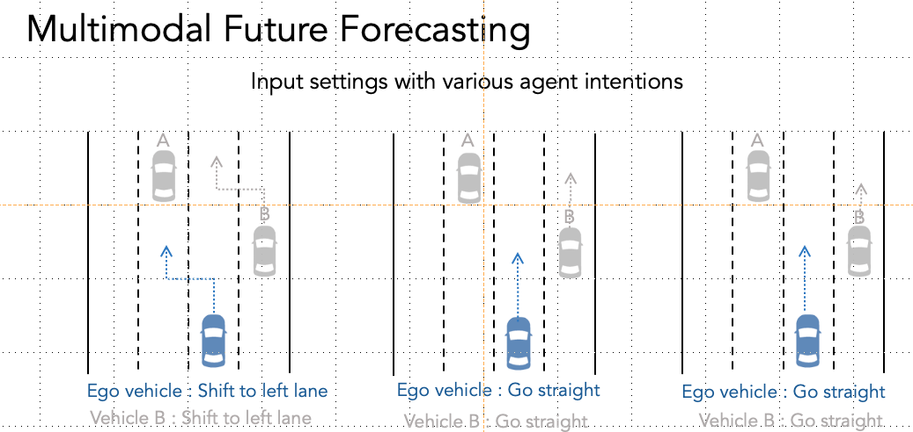
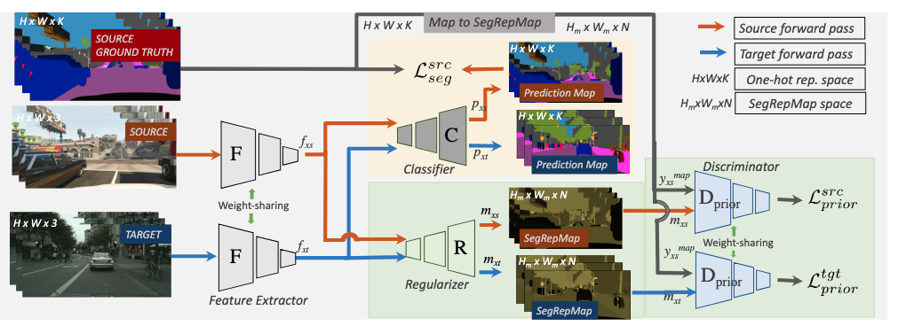
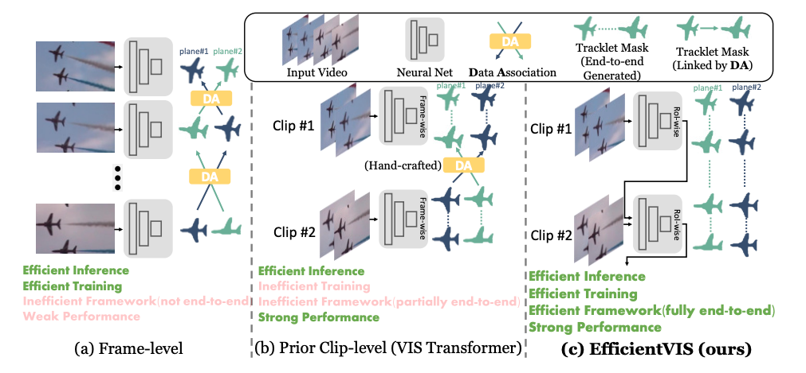
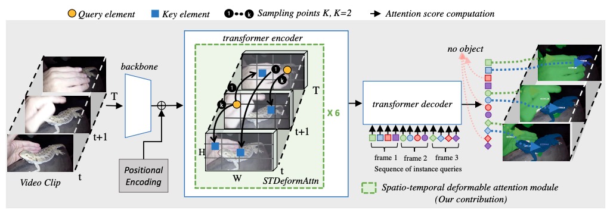
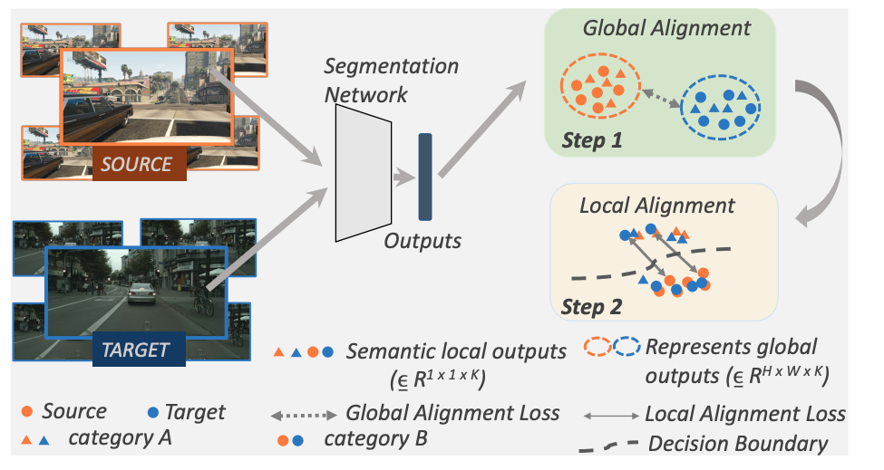
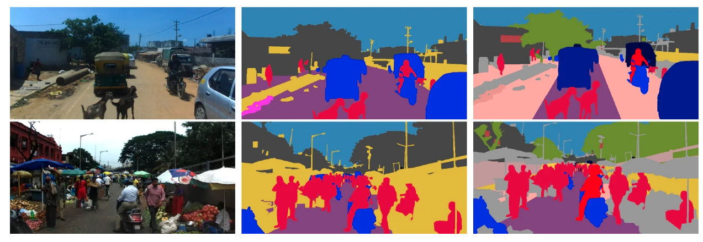
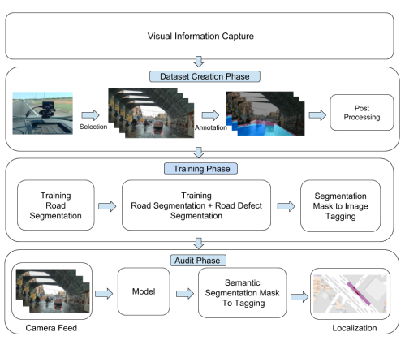

I am a PhD candidate in Computer Science Department at the University at Buffalo advised by Prof. Junsong Yuan. My research focuses on designing video perception and forecasting models for autonomous systems that will enable autonomous systems to perceive and forecast in the real world just as humans are able, and ultimately surpass humans ability to forecast. My research spans three core directions: Video Perception, where I develop efficient and domain-adaptable models; Future Forecasting, leveraging video perception to accurately predict future scenes; and Multimodal Future Forecasting, integrating vision with agent intentions expressed through language to enhance forecasting controllability.
I've had the opportunity to intern at Amazon (with Tian Lan and Hui Liang). Before that, I worked at Adobe.
I received my Bachelor's degree in Computer Science from IIIT
Hyderabad in 2015.
In my free time, I enjoy reading, running, and cricket.
[March '24] I’m currently looking for 2024 Summer Internship in the field of Future Forecasting and 3D Generation. If you are interested, feel free to send me an email at sudhirya AT buffalo.edu !.
[Dec '23] Recieved Graduate Teaching Award from UB CSE Department, 2023.
[July '22] Our journal paper accepted to MVA.
[Mar '22] Two papers accepted to ICASSP 2022.
[Feb '22] One paper accepted to CVPR 2022.
Mutimodal Future Forecasting for Autonomous Driving |
|

|
Future Forecasting (Anonymized title) |
Adversarial Structured Prediction for Domain-Adaptive Semantic Segmentation |
|

|
Efficient Video Instance Segmentation via Tracklet Query and Proposal |
|

|
Deformable vistr: Spatio temporal deformable attention for video instance segmentation |
|

|
Joint Global-Local Alignment for Domain Adaptive Semantic Segmentation |
|

|
Semantic segmentation datasets for resource constrained training |
|

|
City-Scale Road Audit System using Deep Learning |
|

|